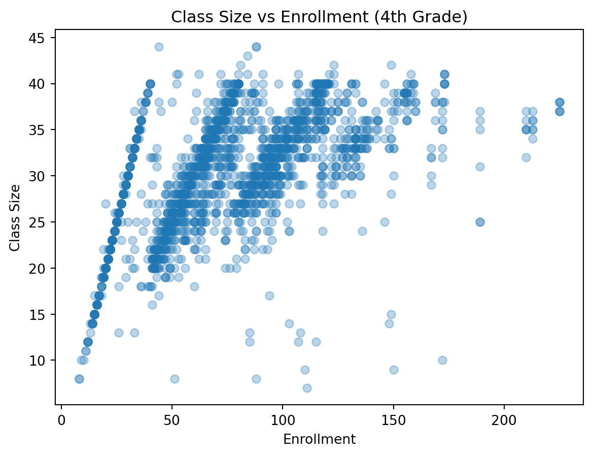

Using Maimonides’ Rule to Estimate the Effect of Class Size on Scholastic Achievement
Author
Junzhe Zhao
Published
May 13, 2026
Introduction
This post replicates part of Angrist and Lavy (1999), which studies the effect of class size on student achievement in Israeli schools. The central challenge is that class size is not randomly assigned, so simple comparisons may be biased. The paper addresses this problem by using Maimonides’ rule, which generates discontinuities in class size when grade enrollment crosses multiples of 40. This creates a regression discontinuity style research design that can be used to estimate the causal effect of class size on test scores.
Main Analysis
In this section, I load the fourth-grade dataset and reproduce the main variables used in the paper. The analysis focuses on fourth grade because the assignment asks for Figure 1 panel B and selected 4th-grade regression results.
The OLS estimates are positive, suggesting that larger classes are associated with higher test scores. This reflects selection bias rather than a causal relationship.
In contrast, the reduced-form estimates are negative, indicating that increases in predicted class size reduce test scores.
plt.scatter(data4["c_size"], data4["classize"], alpha=0.3)plt.xlabel("Enrollment")plt.ylabel("Class Size")plt.title("Class Size vs Enrollment (4th Grade)")plt.show()

Overall, the main analysis shows that naive OLS estimates provide a potentially misleading picture of the relationship between class size and student achievement due to non-random assignment. After constructing predicted class size using Maimonides’ rule, the reduced-form results reveal a negative relationship between class size and test scores. This suggests that smaller classes are associated with better student performance. By exploiting the discontinuities generated by enrollment thresholds, the analysis moves closer to identifying a causal effect, consistent with the findings of Angrist and Lavy (1999). The comparison shows that OLS and RDD estimates differ substantially in sign, highlighting the importance of using an identification strategy to obtain causal effects.
Something Additional
As an additional exercise, I compare the naive OLS estimates with the reduced-form and IV estimates. The OLS specification reflects simple correlations in the data, while the IV approach uses discontinuities created by Maimonides’ rule when enrollment crosses multiples of 40. This changes the interpretation from correlation to a more credible causal estimate. If the IV coefficient is more negative than the OLS coefficient, that suggests the naive regression understates the benefit of smaller classes.